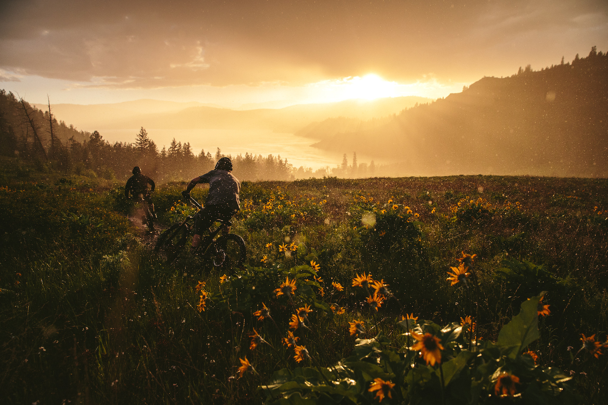
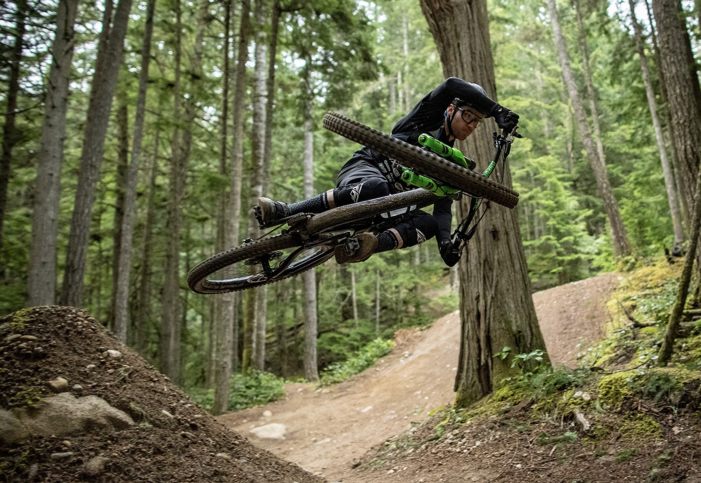

Embark on an adrenaline-pumping adventure through the rugged landscapes of British Columbia, a mountain biker's paradise with world-class trails and breathtaking scenery. This comprehensive guide delves into the heart of mountain biking in BC, highlighting top destinations, trail difficulty levels, essential gear, and expert tips for planning an unforgettable bike trip. Whether you're an experienced rider looking for technical challenges or a beginner looking to explore the beauty of BC's diverse terrain, this is your ultimate resource for an exhilarating mountain biking experience in British Columbia.
Mountain biking in British
Columbia is like maple syrup on pancakes — a perfect match. BC has a rich history
and a deep love
of mountain biking, making it a mecca for riders of all levels. Whether you're a
seasoned pro or
new to two wheels, BC has trails for every type of rider.
The roots of mountain biking in BC run as deep as the potholes you try to avoid. With pioneers exploring the rugged terrain since the 1970s, BC has become synonymous with epic trails and breathtaking descents. The growth of mountain biking in BC has been exponential, with new trails sprouting up faster than weeds in a neglected garden.

Mountain biking isn't just about shredding trails and catching air-although that's a big part of it. It's also a fantastic way to stay fit, connect with nature, and take your mind off the daily grind. Plus, you get to wear cool gear and hang out with like-minded adrenaline junkies. What's not to love?
When it comes to mountain biking in BC, the options are as vast as the mountain views. Here are some must-visit destinations that will get your pedals spinning with excitement:

Whistler Bike Park is the
Disneyland of mountain biking, with a variety of trails for all skill levels. From
flowing jump
lines to
technical descents, Whistler has something for everyone. Plus, the mountain views are so
stunning
they
might distract you from the rock garden ahead.
The Kootenay Rockies region is
a hidden gem for mountain bikers, with endless trails winding through lush forests and
pristine
lakes.
Whether you're into epic alpine rides or fast, flowing singletrack, the Kootenay
Rockies will
have
you grinning from ear to ear.
The North Shore Mountains near Vancouver are famous for their technical trails and challenging features. If you're an adrenaline junkie looking to test your skills, the North Shore is the place to be. The birthplace of DH mountain biking, the North Shore is a must-ride destination.

Sun Peaks Resort offers a diverse range of trails, from gentle slopes for beginners to challenging downhill tracks for advanced riders. The resort also features a bike park with lift access, making it easy to explore the mountain.
Canada's first year-round shuttle bike park, Coast Gravity Park offers a unique mountain biking experience. Built and designed by the Coastal Crew, you'll be sending laps in the park all day.
Navigating the trail ratings and diverse terrain features in BC can be as tricky as trying to ride a unicycle downhill. Here's a breakdown to help you make sense of it all:
From easy green trails to hair-raising double black diamonds, trail ratings in BC follow a standardized system to help riders know what they're getting into. Remember, a black diamond trail in BC might be a whole different beast compared to your local trails back home.
BC is like a buffet of terrain features for mountain bikers. From rooty rainforests to rocky alpine ridges, BC offers a smorgasbord of riding experiences. Just when you think you've seen it all, BC surprises you with a new challenge around every corner.
Planning a mountain biking trip in BC is like assembling a bike from scratch — it takes time, effort, and a bit of know-how. Here are some tips to help you plan a trip that will have you grinning from mud-splattered ear to mud-splattered ear:
BC's mountain biking season runs from spring to fall, with summer being the prime time to hit the trails. Keep an eye on trail conditions and weather forecasts, and pack accordingly. Remember, there's no such thing as bad weather, only bad gear choices.
Whether you prefer camping under the stars or luxuriating in a mountain chalet, BC offers accommodation options for every type of rider. From bike-friendly hotels to backcountry huts, there's a place to rest your weary legs after a day of epic riding. Just remember to book ahead — those mountain views are in high demand.
When it comes to mountain biking in beautiful British Columbia, having the right gear and equipment is essential for a safe and enjoyable ride. From exploring lush forests to tackling rugged terrains, here are some must-have essentials to enhance your biking experience in BC.
No one wants to be stuck with a flat tire or a loose chain miles away from civilization. That's why it's crucial to pack a bike maintenance and repair kit before hitting the trails in BC. Make sure to include essentials like a multitool, tire levers, a spare tube, a portable pump, and chain lubricant. Being prepared for minor repairs can save you from unnecessary headaches and keep you rolling smoothly through BC's stunning landscapes.
Mountain biking in BC is exhilarating, but it can also be risky if you're not properly equipped with protective gear. Before you hit the trails, it's essential to gear up with items like a well-fitted helmet, gloves, knee and elbow pads, and appropriate footwear. These items provide an extra layer of safety and protection against unexpected falls or collisions, ensuring that you can ride confidently and push your limits on BC's challenging terrains. So, suit up and ride safe on your BC mountain biking adventures! As you pedal through the picturesque trails and forests of British Columbia, may the thrill of mountain biking and the serenity of nature intertwine to create lasting memories. From the adrenaline rush of conquering rugged terrains to the tranquility of immersing yourself in BC's natural beauty, each pedal stroke reminds us of the endless adventures waiting to be explored. Embrace the spirit of mountain biking in British Columbia, where every trail leads to new discoveries and unforgettable experiences. Get ready to saddle up, breathe in the fresh mountain air, and keep riding towards your next great mountain biking adventure in BC.
This text was in part writen and formated by https://tinywow.com/write/article-generator